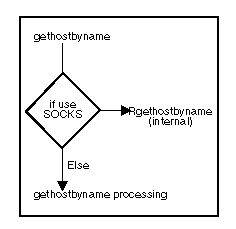

The gethostbyname() call returns a pointer to information about a host specified by a host name.
Syntax
#include <netdb.h> struct hostent *gethostbyname(name) char *name;
Parameters
name
Description:
The following diagram illustrates gethostbyname() processing: gethostbyname
( )Processing

If you are using a SOCKS server, gethostbyname() calls Rgethostbyname(). To avoid having to change your applications should there be changes in SOCKS support, it is recommended you use gethostbyname() rather than Rgethostbyname().
See Socket Secure Support for information about SOCKS.
The gethostbyname() call resolves the host name through a name server, if one is present. If a name server is not present or is unable to resolve the host name, gethostbyname() searches the ETC\HOSTS file in sequence until a matching host name is found or an EOF marker is reached. This search order can be reversed by the following statement in your CONFIG.SYS file:
SET USE_HOSTS_FIRST=1
Return Values
The return value points to static data that subsequent API calls can modify. This call returns a pointer to a hostent structure for the host address specified on the call and indicates success. A NULL pointer indicates an error.
The <NETDB.H> header file defines the hostent structure and contains the following elements:
Element
The value of h_errno indicates the specific error.
h_errno Value Code Description
NETDB_INTERNAL -1 Generic error value. Call sock_errno() or
psock_errno() to get a more detailed error
code (or error message).
HOST_NOT_FOUND 1 The host specified by the name parameter is
not found.
TRY_AGAIN 2 The local server does not receive a response
from an authorized server. Try again later.
NO_RECOVERY 3 This error code indicates an unrecoverable
error.
NO_DATA 4 The requested name is valid, but does not
have an Internet address at the name server.
NO_ADDRESS 4 The requested name is valid, but does not
have an Internet address at the name server.
Related Calls